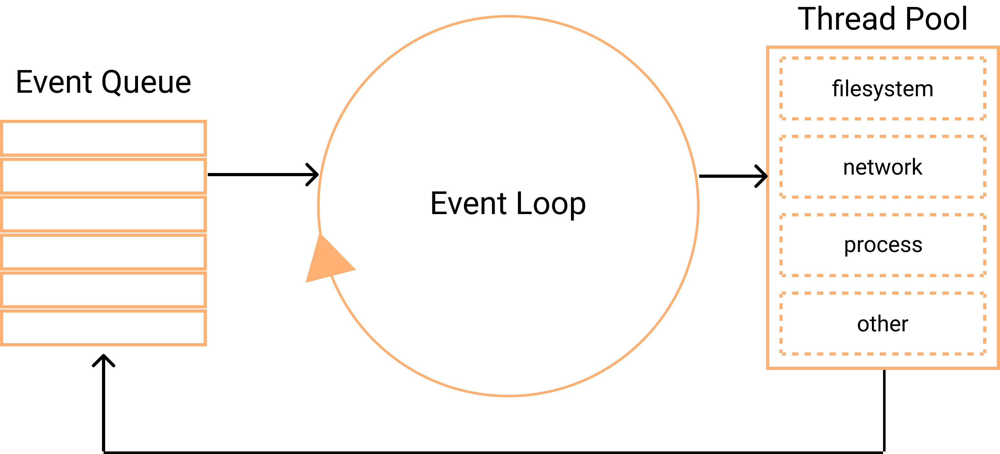

The Event Loop is what allows Node.js to perform non-blocking I / O operations (even though JavaScript is single-threaded) by offloading operations to the core whenever possible

This is the simplest view
of what an Event Loop looks like
The Event Loop is a loop of events, and it is infinite as long as there is something to execute. Event Loop in Node.js is divided into several phases
We need to manage and pay attention to both the task queues and the event loop when we write an application in Node.js - in case we want to use its full power, and if we want to keep our long work. tasks from blocking the main thread